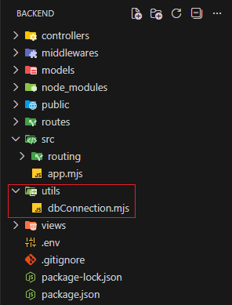
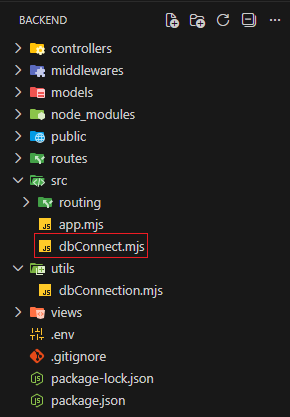
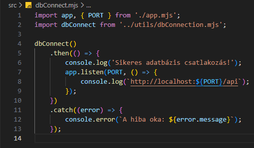

Szerver alapok - dbConnect.mjs
Szerver alapok - dbConnect.mjs

Ebben a részben létrehozzuk az src mappában a dbConnect.mjs állományt, amelyben összekötjük a webszervert a Konyvtar adatbázissal.
-
Hozzuk létre az
srcmappában adbConnect.mjsállományt. , és-
import app, { PORT } from './app.mjs';- azappobjektum alapértelmezett és aPORTnevesített beimportálása. -
import dbConnect from '../utils/dbConnection.mjs';- a csatlakozási függvény beimportálása. -
dbConnect()- a csatlakozásipromisemeghívása. -
.then(() => {...});- afulfilled, azaz sikeres ág. -
app.listen(PORT, () => { console.log(`http://localhost:${PORT}/api`); });- a szerver figyelőmódba állítása is itt történik meg. -
.catch((error) => { console.error(`A hiba oka: ${error.message}`); });- arejected, azaz sikertelen ág.
-